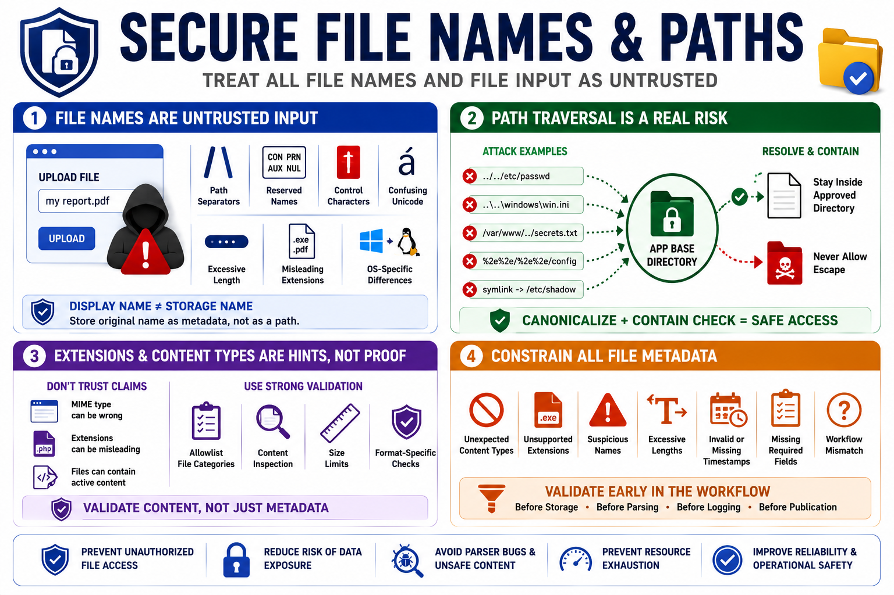

Validating File Names, Paths, and Metadata
Connecting to LMS... Progress: in progress

Narration
File names should always be treated as untrusted input. A user-supplied name may contain path separators, reserved device names, control characters, confusing Unicode, excessive length, misleading extensions, or values that look safe in one operating system and unsafe in another. The displayed name and the storage name should usually be separate concerns. A system can preserve an original name as metadata without trusting it as a path.
Path traversal is the risk that input influences file access outside an intended directory. Absolute paths, relative paths, dot-dot segments, encoded separators, symlinks, and platform-specific behavior can all complicate path handling. Canonicalization concepts can help, but canonicalization must be paired with a containment check against an approved base directory. The final resolved location should remain where the application intended.
Extension checks and content type claims are useful hints, not proof. A browser-provided MIME type can be wrong. A file extension can be misleading or user-controlled. A document can contain active content even when the extension looks familiar. Secure validation should use an allowlist of file categories, size limits, content inspection where appropriate, and format-specific checks rather than trusting a single metadata field.
Metadata should be constrained too. Reject unexpected content types, unsupported extensions, suspicious names, excessive lengths, missing required fields, invalid timestamps, and values that do not match the workflow. Validation should happen before storage decisions, parsing decisions, logging, or publication. The earlier the application converts messy file input into controlled metadata, the easier the rest of the workflow becomes.